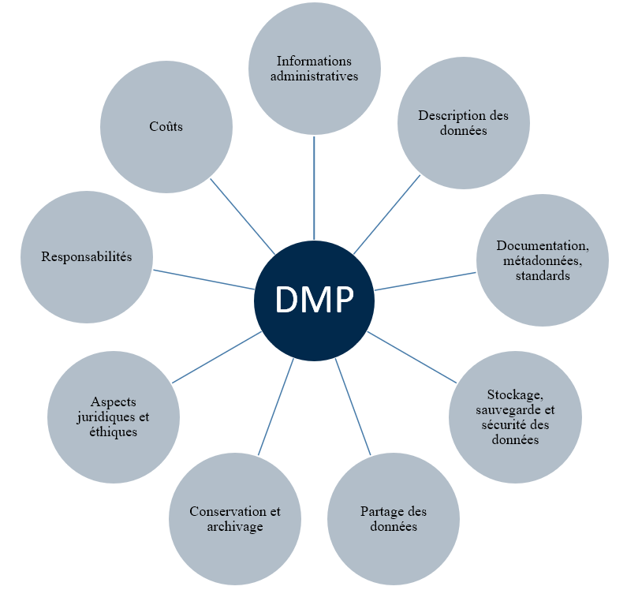

Élaborer un Plan de Gestion des Données (PGD)
1. Le PGD : qu’est-ce que c’est ?
Le terme “Plan de Gestion des Données” (PGD) est issu de l’anglicisme “Data Management Plan” (DMP). Le PGD est un document structuré et évolutif qui décrit l’ensemble des données produites ou utilisées dans le cadre d’un projet ou d’une structure. Ce plan sert à inventorier les questions essentielles concernant l’acquisition, la gestion, la conservation, ou le partage des données de recherche.
Rédiger le PGD revient à élaborer une sorte de check-list qui aide à structurer le document et à s’assurer que tous les aspects importants de la gestion des données sont couverts. Ce processus guide la manière de gérer chaque type de données. Étant donné que le PGD est évolutif, il peut être révisé et adapté à plusieurs reprises tout au long du projet. Par exemple, le programme Horizon Europe recommande la rédaction de trois versions du PGD : une dans les six premiers moi,s une autre durant le projet, et une versino finale à son achèvement.
Le PGD accompagne le cycle de vie des données en prenant en compte toutes ses étapes, depuis la création et la collecte jusqu’) la préservation, le partage, l’accès, et la réutilisation des données. Il aborde des questions crucialestelles que les mesures pour garantir la confidentialité des données. En somme, le PGD permet aux chercheurs et à leurs collaborateurs de se réunir pour planifier efficacement la gestion des données dès le début du projet, assurant ainsi leur protection, leur sécurité et leur valorisation optimale. C’est un outil stratégique essentiel pour toute équipe de recherche.
2. Quel format adopter ?
Bien qu’il existe différents modèles (’templates’) de PGD, le contenu de base reste largement similaire d’un modèle à l’autre. Ces modèles varient principalement dans les questions spécifiques posées, mais ils couvrent tous une série d’éléments fondamentaux qui apparaissent systématiquement. Ces éléments principaux incluent généralement des questions sur la collecte des données, leur stockage, gestion, partgae, préservation, et les mesures de sécurité et de confidentialité à appliquer. Ainsi, malgré les variations dans les questions ou la structure des différents modèles, l’objectif central reste le même : assurer une gestion efficace et sécurisée des données tout au long de leur cycle de vie, conformément aux exigences du projet et des normes de recherche en vigueur. Ces mêmes éléments principaux apparaissent systématiquement (fiche synthétique Doranum) :

La plateforme DMP Opidor offre un support en ligne pour la rédaction des Plans de Gestion des Données (PGD). L’Institut de Recherche pour le Développement (IRD) recommande d’utiliser le modèle fourni par l’Agence Nationale de la Recherche (ANR), jugé adapté à toutes les disciplines. L’interface DMP Opidor est conçue pour guider les chercheurs à travers le processus de rédaction du PGD en posant des questions pertinentes qui couvrent les différents aspects de la gestion des données, facilitant ainsi une approche structurée et complète adaptée à un large éventail de domaines de recherche.
Tableau 3. Éléments principaux d’un PGD
| Éléments | Commentaires | Types de questions |
|---|---|---|
| Description des données | Lors de la rédaction d’un PGD, il est crucial de décrire précisément quelles données seront collectées ou produites au cours du projet. Cela inclut une identification détaillée des types de données (numériques, textuelles, audiovisuelles, etc.), des formats dans lesquels elles seront sauvegardées (PDF, Excel, JPEG, etc.) ou du volume de données attendu (en téraoctets, gigaoctets, etc.). Il est également important de spécifier comment ces données seront obtenues, en distinguant entre les données préexistantes qui seront utilisées et les nouvelles données qui seront générées spécifiquement pour le projet. Cette étape permet de s’assurer que toutes les données pertinentes sont prises en compte et gérées de manière adéquate tout au long du projet. | Il conviendra de décrire :
|
| Documentation et qualité | Il est important de spécifier plusieurs aspects techniques pour assurer une bonne organisation et gestion des données :
|
Voici les aspects à clarifier :
|
| Sauvegarde et stockage des données au cours du projet | Comment les données seront-elles stockées et sauvegardées tout au long du processus de recherche ? Il s’agit ici d’expliquer quel processus de stockage des données sera mis en place durant le projet, afin d’en garantir l’accès pour l’ensemble des collaborateurs du projet. |
|
| Exigences légales et éthiques | Il est crucial d’aborder les implications éthiques et juridiques associées à la collecte, l’utilisation et le partage des données. Voici les questions importantes à considérer :
|
|
| Stratégie de partage et d’ouverture des données | Le PGD doit montrer qu’une réflexion est menée à propos de l’ouverture et du partage de vos données, tout en gardant le principe « aussi ouvert que possible, aussi fermé que nécessaire » au cœur de la démarche. | Possibilité de préciser :
|
| Préservation à long terme des données | Vous aurez à aborder aussi l’aspect « préservation à long terme : quel archivage à long terme pour quelles données ? Dans quelles conditions ? |
|
3. Qui rédige le PGD ?
Généralement, c’est le porteur du projet ou le principal chercheur qui rédige la première version du Plan de Gestion des Données (PGD), mais l’élaboration de ce document peut bénéficier de l’apport de plusieurs autres acteurs. Ces derniers peuvent inclure des co-chercheurs, des gestionnaires de données, des bibliothécaires spécialisés en sciences de l’information, et des conseillers juridiques, tous contribuant à différents aspects du PGD.
De plus, pour aider l’auteur dans la rédaction d’un PGD, diverses ressources en ligne et feuilles de route sont disponibles. Ces outils offrent des conseils, des modèles, et des recommandations spécifiques pour aborder les différentes sections du PGD, assurant que toutes les exigences légales, éthiques, et de gestion sont couvertes. Ces ressources sont conçues pour faciliter le processus d’écriture du PGD, le rendant plus accessible et moins intimidant pour les chercheurs.
Tableau 4. Ressources pour accompagner la rédaction d’un PGD [Doucouré & Hensens “Préalable et socle d’une bonne gestion des données scientifiques” 2023]
| Exemples de PGD | Quelques sites de référence | Respecter les standards de sa communauté | Services d’appuis |
|
|
|
|
4. Quel intérêts du PGD ?
Tableau 5. Avantages collectifs et individuels liés à l’élaboration d’un PGD
| Avantages collectifs | Avantages individuels |
|---|---|
|
|
5. Le PGD outil contraignant ?
Effectivement, l’élaboration d’un PGD peut initialement sembler être une contrainte supplémentaire, surtout en considérant les diverses exigences déjà présentes dans les demandes de financement et la rédaction de projets de recherche. Cependant, il est important de noter que bien que la première rédaction d’un PGD puisse prendre un peu de temps, surtout en raison de la familiarisation avec le processus, ce coût initial d’entrée est souvent rapidement compensé.
Une fois que les chercheurs acquièrent de l’expérience avec leur premier PGD, les rédactions suivantes deviennent beaucoup plus rapides et moins laborieuses. Si vous travaillez régulièrement avec le même type de données et les mêmes organismes, de nombreux aspects du PGD peuvent être réutilisés ou légèrement adaptés, ce qui réduit considérablement le temps et l’effort nécessaires pour les versions ultérieures. Ainsi, le PGD devient non seulement une partie intégrante de la gestion efficace des données, mais aussi un outil plus maniable et moins intimidant au fil du temps.
6. Quelques références
Recommandations de l’ANR pour le PGD.
Opidor :
DMP Opidor : après créatino d’un compte vous pouvez créer vos plans de PGD.
Cat OPIDoR
Livret “Outils et services pour accompagner a gestion des données de la recherche”
Guide pratique pour une harmonisation internationale de la gestion des données de recherche
Doranum aspects juridiques
Le site Ouvrir la science
Vidéos “La journée Science Ouverte de l’IRD” à l’Université Virtuelle de Côte d’Ivoivre, Abidjan :
https://www.youtube.com/watch?v=F6qE4Zl1y4k&t=10926s
https://www.youtube.com/watch?v=SA4I-vxUKeM&t=8621s